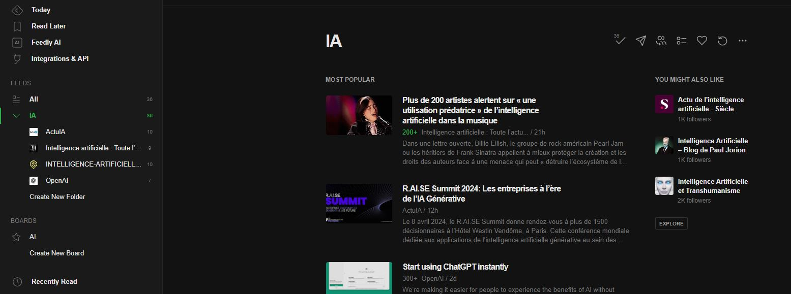

Veille technologique
Ma veille technologique porte sur l'intelligence artificielle et
Présentation
L'intelligence artificielle est un domaine de l'informatique qui se concentre sur la création de systèmes informatiques capables d'exécuter des tâches qui nécessitent généralement l'intelligence humaine. Cela inclut la résolution de problèmes, l'apprentissage, la perception, la compréhension du langage naturel et même la prise de décision.
Dans cette veille je vais principalement m'orienter vers le machine learning et comment ce dernier permet de develper des ia capables de creer des images, de la musique ou encore des videos.
Qu'est ce que le Machine Learning
Le machine learning est un processus par lequel les ordinateurs apprennent à partir de données pour accomplir des tâches spécifiques sans être explicitement programmés.
Il fonctionne en entraînant un modèle sur un ensemble de données d'entraînement, en évaluant ses performances sur un ensemble de données de test et en l'optimisant si nécessaire pour obtenir de meilleurs résultats.
Une fois entraîné, le modèle peut être déployé pour effectuer des prédictions ou des classifications sur de nouvelles données.
Collecte de donnees
Le processus commence par la collecte de données utile pour la tâche à accomplir.
Préparation des Données :
Les données brutes sont souvent nettoyées, transformées et préparées pour l'entraînement des modèles. Cela peut inclure des étapes telles que l'élimination des valeurs manquantes, la normalisation des données forme utilisable par les algorithmes de machine learning.
Choix du Modèle :
En fonction de la nature de la tâche et des caractéristiques des données, un modèle de machine learning approprié est sélectionné. Il existe différents types de modèles, tels que les réseaux de neurones, les arbres de décision, les machines à vecteurs de support, etc., chacun ayant ses propres forces et limitations.
Entraînement du Modèle :
Le modèle est entraîné sur un ensemble de données d'entraînement afin d'apprendre les relations et les modèles présents dans les données. Pendant l'entraînement, le modèle ajuste ses paramètres internes de manière itérative pour minimiser une fonction de coût qui mesure la différence entre les prédictions du modèle et les vraies valeurs dans les données d'entraînement.
Évaluation du Modèle :
Une fois que le modèle est entraîné, il est évalué sur un ensemble de données de test distinct pour évaluer ses performances. Cela permet de vérifier si le modèle généralise bien aux nouvelles données qu'il n'a pas vues pendant l'entraînement.
Optimisation et Validation :
Si nécessaire, le modèle peut être optimisé en ajustant ses hyperparamètres ou en utilisant des techniques de régularisation pour améliorer ses performances. Une validation croisée peut également être utilisée pour évaluer la robustesse du modèle sur plusieurs ensembles de données de test.
Déploiement et Utilisation :
Une fois que le modèle a été évalué et validé, il peut être déployé dans un environnement de production où il est utilisé pour effectuer des prédictions sur de nouvelles données en temps réel.
Pour ma veille j'utilise feedly
Feedly est un agrégateur de flux RSS et une plateforme de veille informationnelle en ligne. Qui me permet de suivre facilement les dernières des feeds que j'ai choisis sur une seule interface.
